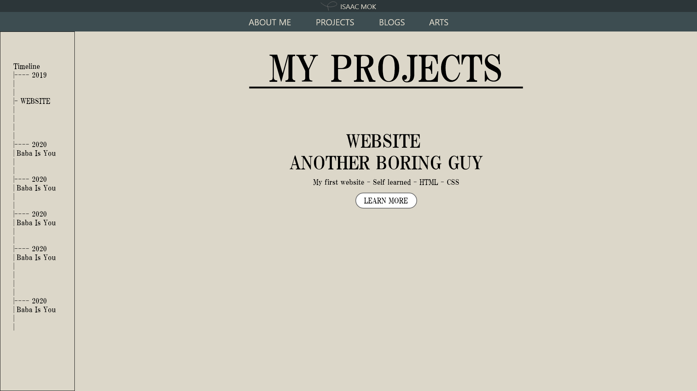
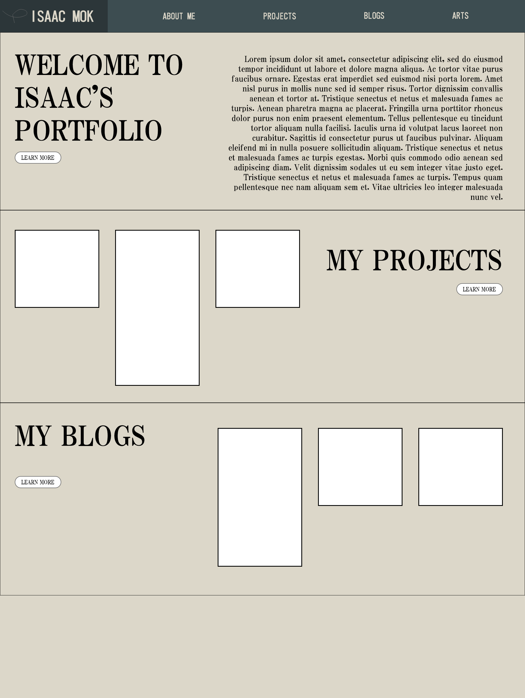
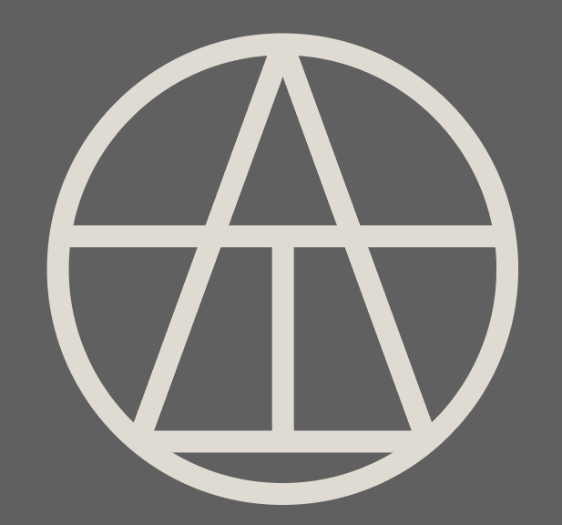
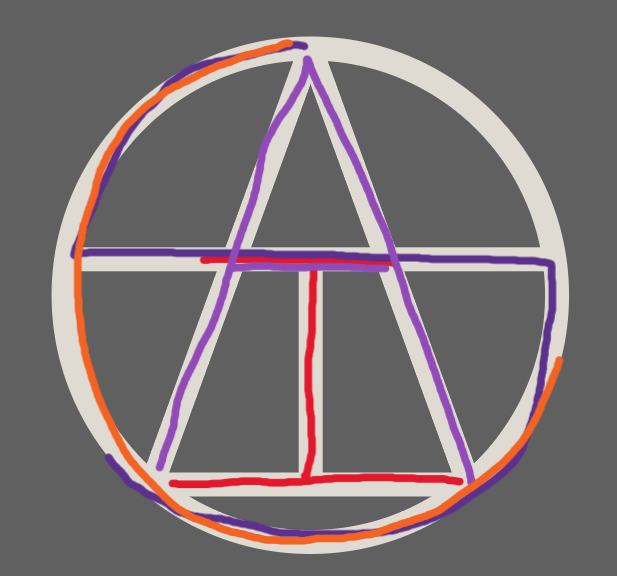

Blog
CCT260 Asssignment process page
2023-04-09
Isaac Mok
Planning
To start with my website, I want to have a prototype and information architecture to make later process easier. In Summer 2020, I self-learned and coded my very first portfolio. It took me 4 months to learn and construct the entire website, but it still was not the greatest considering how much time and effort was put into it. I believe I took too much time deciding on the designs while coding. Therefore, taking from CCT260, I planned on using information architecture and prototyping before starting the actual programming.
rationale
This website is solely based around being a portfolio that showcase myself. So this website includes information about myself, my experiences and contacts. This would include the homepage, about me page, projects page, blogs, contact page and an art page.
- Homepage is to welcome audiences to my website and include some links to inner pages;
- About Me page is the resume, listing my education, projects, professional experiences;
- Projects page is to list all the projects and their details;
- Blogs page is to record all blogs that are unrelated to my projects;
- Arts page is simply to display all the drawings or assets that I am proud of.
- Contact page includes my personal information for people to contact me.
inspirations
From my previous portfolio website, which I am proud of, I had black and grey as my main theme. This time, I want to approach a theme different from the last one, so I went for a more clean and simplistic style. In this website, it has a feeling of the old 90's newspaper biege color. The white boxes, the highlights, on the homepage is exactly to mimic the sub-sections in a newspaper.
information architecture
The structure of this website is as follows:
- Home
- About Me Section
- Projects Section
- Blogs Section
- About Me
- Projects
- Penetration & Vulnerability Testing
- Reverse Engineer Obfuscated Malware
- Personal Portfolio Website
- Blogs
- CCT260 - Process Page
- Blog Example 1
- Blog Example 2
- Blog Example 3
- Arts
- Contacts
The first layer refers to the links in the navigation bar and footer that exists on every page.
Home page includes three sections, the welcome section that links to the about me page through the "learn more" button; the project and blog section each showcases three highlights that leads to the inner pages (second layer).
About me page is the resume.
Projects page consists a list of the projects. The individual projects are inner pages.
Blogs page is similar, consists a list of the blogs. The individual blogs are inner pages.
Arts page is simply one layer, to showcase all the images and drawings that I have done by myself.
asset management
In the root folder, there are all the html files, the svg file for the logo and folders to catergorize all the file types. The folders include css, images, text, and videos. I have decided to seperate a style.css that has all the header and footer styles that every page needs, so I can include style.css and have a seperate .css file that is dedicated to the content on each page.
prototype
 Software used: Adobe XD
The above two images are the prototypes for my project page and home page designed using Adobe XD. The left image is the prototype for my project page, I did not end up implementing it in my page, but it showcased my early design for the header. It is seperated into two levels, my name plus the logo, and the navigation bar. I did not like the design because it looks a bit empty on the top bar after I tried coding it. Therefore, I went back to Adobe XD and designed the current top bar/navigation bar. It is the combination of the two bars for the previous version. The huge text with a learn more button alternatively on the left and right is decided in early stages and survived all the way. I later went back to add on the white boxes so each section represents an inner page. The prototype does not include all the pages because I had the images of having the big title at the top with the page's corresponding content below.
logo design
 Software used: Adobe Illustrator
This logo is a combination of all my letters in my name: "I", "S", "A", "C". Exported as an .svg file from Illustrator
coding stage
The home page was the hardest page to code, I was having a hard time organizing all the elements in its right places as designed in the prototype. I also did not have a high fedility one that is fully designed and interactable, so for example, the white boxes (the highlights) are added later and made things switch around more. I eventually found the easier way to seperate each section into two containers, left and right, one being the title plus learn more, the other being the highlights/bio.
WCAG 2.0 Accessibility
Color Contrast - All the background colors and font colors are picked so it is easy to read, just like on an old newspaper. Most of the images also have an alternative text in case the image does not show.